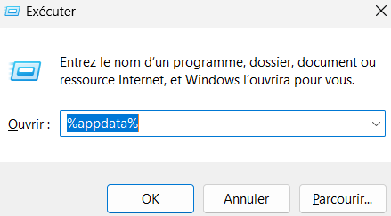
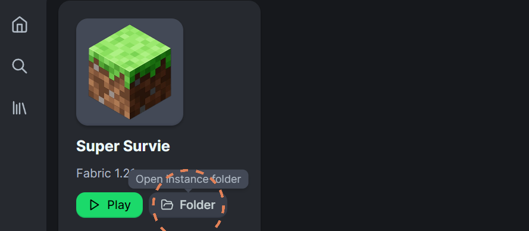
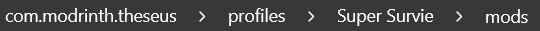
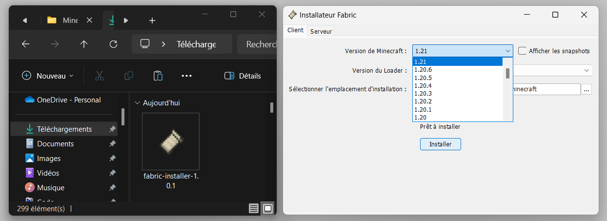
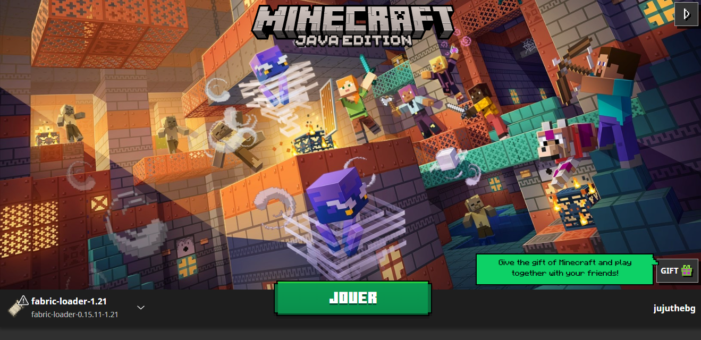
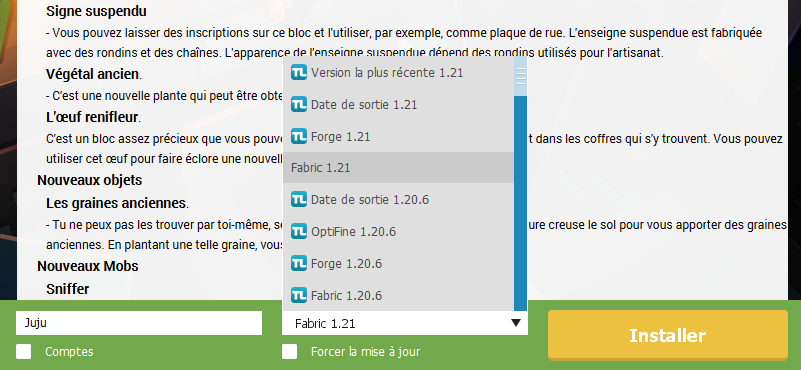

💻 Minecraft [JE] est l'édition des débuts de Minecraft. Elle est disponile uniquement sur PC, ou sur téléphone via un Minecraft Cracké. C'est un Minecraft ouvert, dont les travaux acharnés de la communauté sont le pilier. Les joueurs de Minecraft t'y proposent des améliorations, ajouts, la plupart du temps gratuits. C'est l'édition de Minecraft que je te conseille et que tu devrais privilégier.
📱 Minecraft [BE] est une édition plus récente, déployée sur Windows, consoles et téléphones. Elle est moins personnalisable et créative, mais a permis à Minecraft de se répandre sur toutes les plateformes et de faire davantage de profit par un jeu encadré avec microtransactions. (Au cas où : Minecraft [BE] est appelé Pocket Edition [PE] sur téléphone)
⚠️ Attention, ce qui suit est uniquement disponible sur minecraft [JE]* (Définition en Intro), et recquiert une bonne machine pour fonctionner correctement (PC portable Gamer, Tour). Il t'est également conseillé d'avoir suivi l'étape 2 avant cette étape !
👉 Les shaders permettent d'embellir ton jeu par une eau et des lumières naturelles et réalistes. Ils se présentent sous forme de dossiers, télécharges-en quelques-uns (tu pourras les tester en jeu) :
⚡ Si ton jeu rame, fais un compromis et teste celui-ci : -beau, mais +léger

❓ Des mods sont des fichiers de code créés par la communauté, apportant des modifications au jeu.
👉 Ici, un mod est nécessaire au fonctionnement des Shaders, télécharge-le dans la version de Minecraft que tu souhaites jouer (1.18, 1.21, 1.21.1 etc) et avec la compatibilité 'Fabric' :
Mod Iris ShadersRequis👉 Il est conseillé d'y ajouter le mod suivant, qui rendra ton Minecraft plus fluide :
Mod SodiumRecommandé👉 Télécharge un des packs (contenant des mods permettant aux Shaders de fonctionner & contenant des ajouts bonus) suivants dans la version de Minecraft que tu souhaites jouer (1.18, 1.21, 1.21.1 etc) si elle est présente :
Version 1.21.1Dernière version Version 1.21⚠️ Attention, tout mod recquiert "Fabric" pour fonctionner, c'est une version de Minecraft spéciale qui te sera présentée à l'étape 2.
👉 Ouvre ton explorateur de fichiers avec tes "Téléchargements"

❓ Le "launcher", c'est l'application que tu lances pour cliquer sur "Jouer" et démarrer Minecraft.
👉 Presse les touches [Windows] et [R] en même temps. Une petite fenêtre s'ouvre : inscris-y "%appdata%" et confirme.
👉 Dans le nouvel Explorateur de fichiers ouvert, entre dans le dossier ".minecraft" puis "mods". Si aucun dossier "mods" n'existe, crées-en un.

👉 Glisses-y le Mod "iris-mc" et les autres Mods téléchargés (Ex : "sodium"), depuis ton dossier de téléchargements.

👉 Retourne en arrière, et entre dans le dossier "shaderpacks" (lui aussi situé dans le dossier ".minecraft"). Si aucun dossier "shaderpacks" n'existe, crées-en un.

👉 Glisses-y les dossiers compressés de Shaders téléchargés depuis ton dossier de téléchargements

⚠️ Attention, assure-toi d'avoir créé une instance en "Fabric x.x.x" ou autre version compatible avec les mods que tu y inséreras.
👉 Ouvre ton launcher, puis sélectionne ton instance créée. Par exemple sur Modrinth, clique sur "Folder" pour y retrouver les fichiers du jeu.
👉 Dans le nouvel Explorateur de fichiers ouvert, entre dans le dossier "mods".
👉 Glisses-y le Mod "iris-mc" et les autres Mods téléchargés (Ex : "sodium"), depuis ton dossier de téléchargements.
👉 Retourne en arrière, et entre dans le dossier "shaderpacks" (lui aussi situé dans le dossier de ton instance).

👉 Glisses-y les dossiers compressés de Shaders téléchargés depuis ton dossier de téléchargements
👉 Ouvre TLauncher (Minecraft cracké), puis clique sur l'icône de dossier en bas à droite de l'application pour y retrouver les fichiers du jeu.

👉 Dans le nouvel Explorateur de fichiers ouvert (ayant ouvert le dossier ".minecraft"), entre dans le dossier "mods". Si aucun dossier "mods" n'existe, crées-en un.
👉 Glisses-y le Mod "iris-mc" et les autres Mods téléchargés (Ex : "sodium"), depuis ton dossier de téléchargements.
👉 Retourne en arrière, et entre dans le dossier "shaderpacks" (lui aussi situé dans le dossier ".minecraft" précédemment ouvert). Si aucun dossier "shaderpacks" n'existe, crées-en un.
👉 Glisses-y les dossiers compressés de Shaders téléchargés depuis ton dossier de téléchargements
🏆 Ca y est ! Les Mods & Shaders sont placés
❓ Le "launcher", c'est l'application que tu lances pour cliquer sur "Jouer" et démarrer Minecraft.
👉 Pour que les mods prennent effet sur Minecraft, télécharge cette micro-app :
Fabric Loader AppRequis👉 Ouvre l'App, et sélectionne la version "x.x.x", puis clique sur "Installer"
👉 Ouvre le launcher Officiel de Minecraft [JE] et clique sur "Jouer"
🏆 Ca y est !
👉 Lance Minecraft à l'aide de ton launcher
🏆 Ca y est !
❓ Pour que les mods prennent effet , tu dois choisir une version Fabric de minecraft.
👉 Ouvre Tlauncher (Minecraft cracké), et sélectionne la version "Fabric x.x.x", puis clique sur "Installer".
👉 Clique sur "Entrer dans le jeu"
🏆 Ca y est !